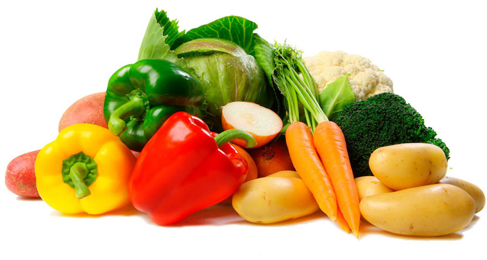
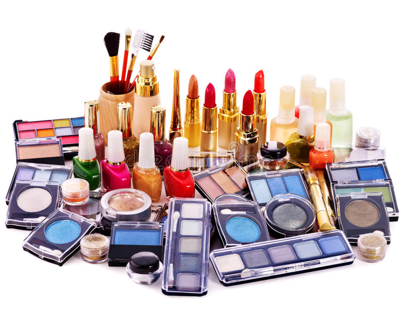

Welcome to Groceries Supermarket
We are a one-stop shop for all your grocery needs. Fresh fruits, vegetables, dairy products, cosmetics... we have it all. Our mission is to provide high-quality products at affordable prices.
Our services include home delivery, online ordering, and a loyalty program that rewards you for every purchase. Shop with us and experience the best in grocery shopping.
Check Our Products
Dairy Products

Features a wide range of products including milk, cheese, yogurt, and more. We source our dairy products from reputable suppliers to ensure you get the highest quality.
Vegetables
Our organic vegetables are grown without the use of synthetic pesticides or fertilizers. We work with trusted farmers to bring you a wide selection of healthy and nutritious vegetables.
Cosmetics and Skin Care
We offer a wide range of cosmetics and skin care products to help you look and feel your best. Our selection includes makeup, skincare products, and more, sourced from top brands.